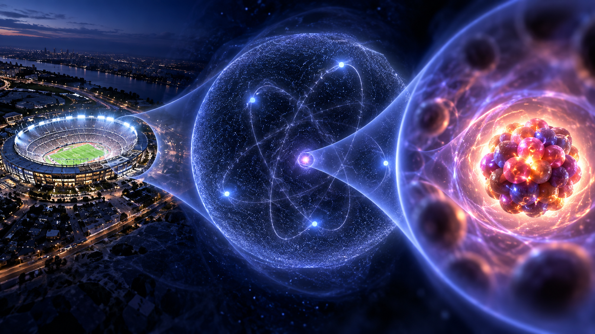
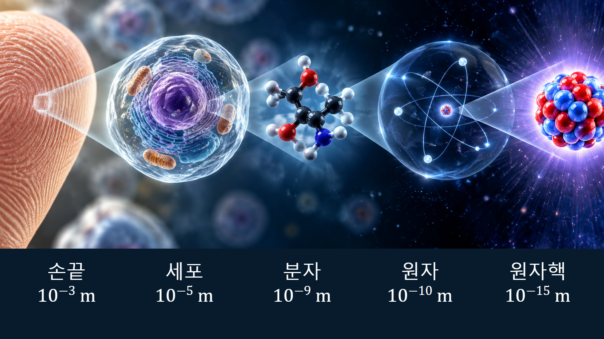
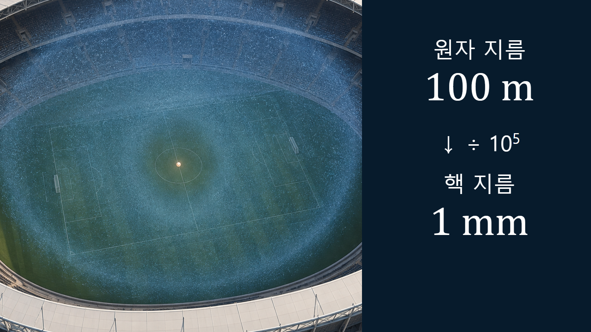

원자와 원자핵의 기초 · 002
원자와 원자핵의 크기
전자구름과 원자핵 사이의 약 10만 배 길이척도가 보여주는 물질 내부의 구조

원자와 원자핵은 모두 경계가 칼로 자른 듯 뚜렷하지 않아 유효반지름으로 크기를 나타냅니다. 대표적으로 원자의 반지름은 원자핵 반지름보다 약 10만 배 큽니다.
전자구름과 원자핵의 정의
원자 중심에는 양성자와 중성자로 이루어진 원자핵이 있고, 전자는 핵 주위에서 발견될 확률로 표현됩니다. 이 공간 분포를 전자구름이라고 합니다. 전자구름은 바깥으로 갈수록 점차 희미해지므로 원자의 끝을 한 줄로 정할 수 없습니다. 원자핵도 표면 부근에서 핵자의 밀도가 점차 낮아집니다. 따라서 측정과 계산에서는 전자가 존재할 가능성이나 핵물질의 분포를 기준으로 유효한 크기를 정합니다.
다섯 자릿수의 길이척도 차이
대부분 원자의 반지름은 약 10⁻¹⁰ m 규모이고 원자핵 반지름은 약 10⁻¹⁵~10⁻¹⁴ m 규모입니다. 10⁻¹⁰ m를 10⁻¹⁵ m로 나누면 10⁵, 즉 100,000이 됩니다. 길이가 10만 배 다르면 같은 모양을 가정한 부피는 그 세제곱인 약 10¹⁵배 차이가 납니다. 핵은 원자 부피의 극히 작은 부분이지만 전자보다 훨씬 무거운 양성자와 중성자가 모여 있어 원자 질량의 거의 전부를 담당합니다.
| 비교 대상 | 대표 길이척도 | 100 m 확대 비유 | 물리적 의미 |
|---|---|---|---|
| 원자·전자구름 | 약 10⁻¹⁰ m | 경기장 전체 | 화학결합과 물질의 외형을 좌우 |
| 원자핵 | 약 10⁻¹⁵~10⁻¹⁴ m | 중앙 약 1~10 mm 규모(선택한 핵 크기에 따라 변동) | 질량과 핵반응 에너지가 집중 |
| 길이비 | 대표적으로 약 10⁵:1 | 100 m:1 mm | 부피비는 대략 10¹⁵:1 |

경기장 확대의 단계별 예시
원자를 지름 100 m인 경기장으로 확대하면 원자핵은 중앙의 약 1 mm 알갱이에 해당합니다. 계산은 100 m ÷ 100,000 = 0.001 m, 즉 1 mm입니다. 이때 경기장 내부를 단단한 물질이 채우는 것이 아니라 전자가 발견될 확률이 넓게 퍼져 있다고 이해해야 합니다. 이 비유는 길이비를 직관적으로 보여주지만 전자가 관중처럼 특정 좌석에 머문다는 뜻은 아닙니다.

핵반지름 계산의 단계별 예시
핵반지름은 근사적으로 R = R0A1/3으로 나타냅니다. A는 양성자와 중성자를 합한 질량수, R0는 약 1.25 fm이며 1 fm는 10⁻¹⁵ m입니다. 이 식으로 헬륨-4와 우라늄-238을 비교해 봅니다. 헬륨-4는 1.25 × 41/3 ≈ 1.98 fm, 우라늄-238은 1.25 × 2381/3 ≈ 7.75 fm입니다. 이 값은 R0=1.25 fm로 고정한 경험식의 계산 예시이며, 특히 가벼운 핵의 정밀 측정 반지름을 그대로 재현한다는 뜻은 아닙니다. 질량수는 59.5배지만 반지름은 약 3.9배입니다. 핵자 수가 늘어나면 내부 밀도가 대략 유지된 채 부피가 증가하므로 반지름은 질량수의 세제곱근에 비례해 완만하게 증가합니다.
핵반응과 재료해석의 실제 적용
원자로에서는 중성자가 원자핵과 충돌하거나 흡수되는 확률을 이용해 연쇄반응을 계산합니다. 핵이 매우 작다는 사실만으로 반응이 드물다고 단정할 수는 없습니다. 중성자는 물질 속에서 막대한 수의 원자핵을 만나며, 반응확률은 기하학적 크기뿐 아니라 중성자 에너지와 핵종의 양자상태에 따라 달라집니다. 반면 화학결합, 전기전도, 재료의 접촉력은 주로 훨씬 넓은 전자구름의 상호작용에서 결정됩니다. 두 길이척도를 구분해야 핵반응과 화학반응을 혼동하지 않습니다.
빈 공간과 고정 궤도에 관한 오해
원자 내부가 대부분 빈 공간이라는 표현은 입문용 비유입니다. 실제 공간에는 전자 파동함수와 전자기장이 존재하며, 전자 사이의 전기적 반발과 파울리 배타원리가 물질이 서로 그대로 통과하지 못하게 합니다. 또한 원자 모형의 원형 궤도는 위치를 설명하기 쉬운 상징일 뿐입니다. 현대 양자역학에서 전자는 행성처럼 정해진 길을 도는 작은 공이 아니라 발견 확률로 기술되는 대상입니다. 경기장 비유도 크기비만 설명하며 양자상태의 형태까지 재현하지는 못합니다.
핵심 정리
원자의 유효반지름은 약 10⁻¹⁰ m, 원자핵은 약 10⁻¹⁵~10⁻¹⁴ m입니다. 대표적인 길이비는 약 10만 대 1이며 핵반지름은 A1/3에 비례해 증가합니다. 핵은 작지만 질량과 핵반응 에너지가 집중된 중심이고, 넓은 전자구름은 화학결합과 물질의 크기를 좌우합니다. 이 구분은 다음 글에서 양성자·중성자·전자의 역할을 이해하는 기초가 됩니다.